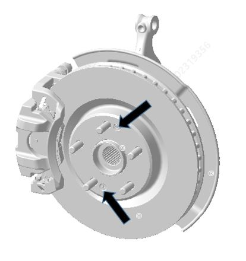

Снятие
1. Снять передний тормозной суппорт, см. Передний тормозной суппорт
Снятие тормозного шланга можно пропустить.
2. Подвесить суппорт.
Подвесить тормозной суппорт во избежание натяжения тормозного шланга.
3. Снять тормозной диск. С помощью крестовой отвертки выкрутить винты крепления тормозного диска, момент затяжки: 9 - 11 N.m.

Установка
Установка выполняется в порядке, обратном снятию. Момент затяжки винтов крепления тормозного диска: 9 - 11 N.m.
При замене тормозного диска, если оригинальный диск сильно изношен, перед установкой суппорта необходимо с помощью инструмента для вдавливания поршня вернуть поршень в исходное положение. Передняя торможная колодка Задняя торможная колодка